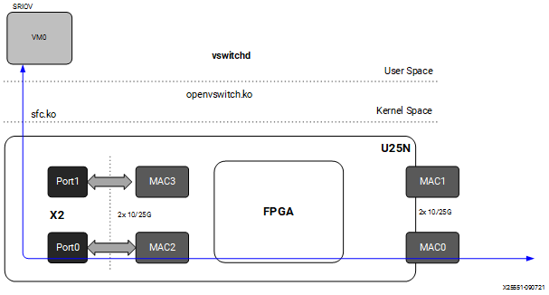
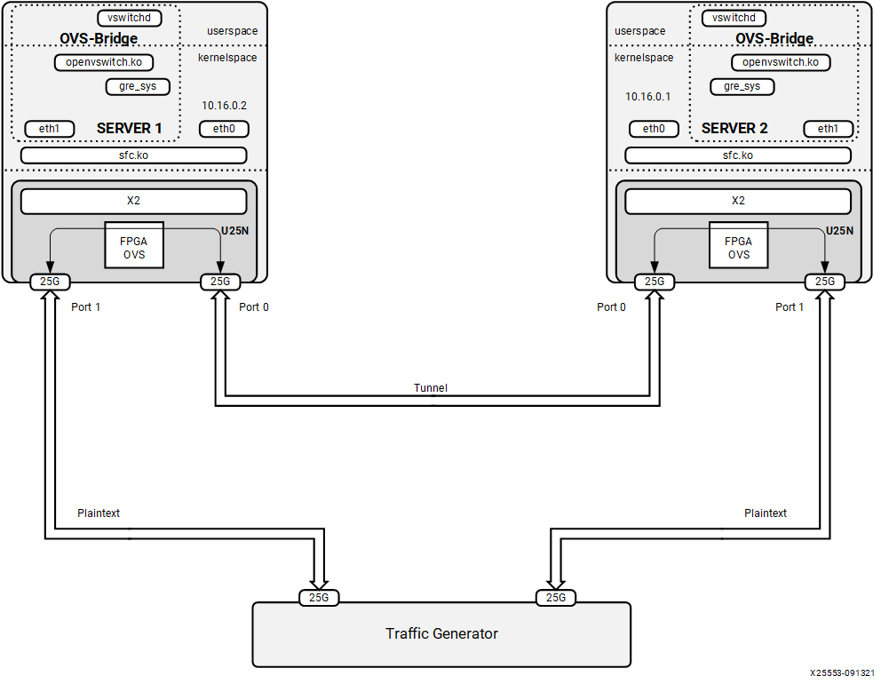

Detailed Applications Description¶
Legacy and Switchdev Modes¶
Legacy NIC (Default)¶
Packets from the external MAC0 are forwarded to the internal MAC2 without any modifications on flow entry miss, and vice versa. Similarly, packets from the external MAC1 are forwarded to the internal MAC3 without any modifications on flow entry miss, and vice versa.
Figure 5: Legacy Mode
Switchdev Mode¶
When changed to switchdev mode, the U25N can support OVS switching. Devlink features are added to the PF0 interface in each adapter to support the switch mode. Switchdev mode can be added for a single adapter or both. A new representor network interface comes up for each VF when a VM is connected to the VF via SR-IOV virtual ports provided by X2 VNICs.
Figure 6: Switchdev Mode

OVS¶
Installing OVS¶
OVS is a multilayer software switch licensed under the open source Apache 2 license. It implements a production quality switch platform that supports standard management interfaces and opens the forwarding functions to programmatic extension and control. OVS is well suited to function as a virtual switch in VM environments. Carry out the following step to install OVS:
The OVS source code is its Git repository, which you can clone into a directory named ovs with the git clone command (see https://github.com/openvswitch/ovs.git).
After it has been cloned, the ovs directory will be in the current directory path. Move inside the ovs directory using the cd command. For example:
cd ovs
Execute the following commands one by one as the root user:
./boot.sh ./configure make -j8 make install
Export the path:
export PATH=$PATH:/usr/local/share/openvswitch/scripts
Perform a version check:
ovs-vswitchd --version
Note: Version 2.12 and 2.14 have been tested.
Maximum flows supported: 8k
Classification Fields (Matches)¶
Key
ipv4/ipv6 src_ip
ipv4/ipv6 dst_ip
ip_tos
ip_proto
ovlan Outer
ivlan Inner
ether_type
tcp/udp src_port
tcp/udp dst_port
src_mac
dst_mac
vni
Ingress port
Action
do_decap
do_decr_ip_ttl
do_src_mac
do_dst_mac
do_vlan_pop
do_vlan_push
do_encap
do_deliver
Port to Port¶
The U25N PF is added to the OVS bridge. Packets are sent at an external MAC, and OVS does the switching based on the packet received.
Refer to Basic Requirements and Component Versions Supported for the required OS/ software version.
If the U25N driver version is 5.3.3.1003, ignore this step. Check the driver version of the U25N interface using the following command:
ethtool -i U25_eth0 | grep version
This should give the output as version 5.3.3.1003.
Note: To install the latest sfc driver, refer to U25N Driver.
Make both PF interfaces up:
List the interfaces using the
ifconfig -acommand.Find the U25N interface using the
ethtool -i <interface_name>command:ifconfig <u25_interface> up
For example:
ifconfig U25_eth0 up ifconfig U25_eth1 up
Make the PF interfaces into switchdev mode.
Note: Make sure the PF interface link is up before doing switchdev mode.
The
lspci | grep Solcommand gives us the PCIe® device bus ID:devlink dev eswitch set pci/0000:<PCIe device bus id> mode switchdev
For example:
devlink dev eswitch set pci/0000:af:00.0 mode switchdev devlink dev eswitch set pci/0000:af:00.1 mode switchdev
Follow the steps mentioned in OVS Configuration to create an OVS bridge. After creating the OVS bridge, continue to the next step.
Add external ports to the OVS bridge:
ovs-vsctl add-port br0 <PF interface>
For example:
ovs-vsctl add-port br0 U25_eth0 ovs-vsctl add-port br0 U25_eth1
Print a brief overview of the database contents:
ovs-vsctl show
Refer to Functionality Check to check the OVS functionality.
Figure 7: Port to Port

Port to VM or VM to Port¶
Note: SR-IOV must be enabled in BIOS. For the Port to VM or VM to Port case, a tunnel could be created with two server setups. Here the tunnel can be VXLAN or L2GRE.
Refer to Basic Requirements and Component Versions Supported for the required OS/software version. For VM use cases, VFs need to be created at the corresponding PF for binding to the VM. The number of VF counts should be configured in the sfboot command and in sriov_numvfs.
Note: For more information, refer to sfboot Configuration.
Check the driver version of the U25N interface using the following command:
Note: Ignore this step if the U25N driver version is 5.3.3.1003.
ethtool -i U25_eth0 | grep version
This should give the output as version 5.3.3.1003.
Note: To install the latest sfc driver, refer to U25N Driver.
Note: Refer to Deployment Image Flashing for flashing images to check OVS functionality.
Make the U25N PF interface up:
a. List the PF interface using the
ifconfig -acommand.b. Find the U25N PF interface using the
ethtool -i <interface_name>command.For example:
ethtool -i <U25_eth0>
driver: sfc
version: 5.3.3.1003
ifconfig <U25_interface> up
For example:
ifconfig U25eth0 up
Allocate the number of VF to PF. Here, a single VF is allocated to the PF0 interface:
Note: The VF could also be created in the PF1 interface based on use case. The sriov_numvfs count should be less than or equal to the VF count given in the sfboot command. The sriov_numvfs should be done only in legacy mode. To check the U25N mode, excecute the following steps.
devlink dev eswitch show pci/0000:<pci_id>
The output of the above command would be:
pci/0000:af:00.0 mode legacy
If not in legacy mode, change to legacy mode using the following command:
devlink dev eswitch set pci/0000:<PCIe device bus id> mode legacy echo 1 > /sys/class/net/<interface>/device/sriov_numvfs
For example:
echo 1 > sys/class/net/U25_eth0/device/sriov_numvfs
Note: After the above command is executed, a VF PCIe ID and VF interface are created. The VF PCIe device ID can be listed with the command
lspci -d 1924:1b03. An example of the device ID is 86:00.2 Ethernet controller: Solarflare Communications XtremeScale SFC9250 10/25/40/50/100G Ethernet Controller (Virtual Function) (rev 01). This VF PCIe ID is used for binding the VF to a VM.The VF interface can be found using the
ifconfig -acommand. To differentiate VF from PF, use the ip link show command. This gives the VF interface ID and VF interface mac address under the PF interface.Make the VF interface up:
ifconfig <vf_interface> up
Make the PF interfaces into switchdev mode:
Note: Make sure the PF interface link is up before doing switchdev mode.
The
lspci | grep Solcommand gives the PCIe device bus ID.devlink dev eswitch set pci/0000:<PCIe device bus id> mode switchdev
For example,
devlink dev eswitch set pci/0000:af:00.0 mode switchdev.Running the above command creates a VF representor interface. The VF representor interface name will be the PF interface name followed by
_0for the first VF representor and_1for the second V representor, and so on.Note: Here, the number of VF representor interfaces created is based on the sriov_numvfs value configured.
ip link show | grep <PF_interface>
For example,
ip link show | grep <u25eth0>.Note: Here u25eth0 is the PF interface and u25eth0_0 is the VF representor interface.
Now make the VF representor interface up using the ifconfig command:
ifconfig <vf_rep_interface> up
Follow the steps mentioned in OVS Configuration to create an OVS bridge. After creating the OVS bridge, proceed to the next step.
Add PF interfaces as ports to the OVS bridge:
ovs-vsctl add-port br0 <x2 interface>
For example,
ovs-vsctl add-port br0 U25eth0.Add a VF representator interface as a port to the OVS bridge:
ovs-vsctl add-port <bridge-name> <VF rep interface>
For example,
ovs-vsctl add-port br0 U25eth0_0.Make the OVS bridge up:
ifconfig <bridge-name> up
Print a brief overview of the database contents:
ovs-vsctl show
Refer to VM Installation to make the VM up. After the VM is up, proceed to the next step to check functionality.
Refer to Functionality Check to check OVS functionality.
Figure 8: Port to VM or VM to Port

VM to VM¶
Note: SR-IOV must be enabled in BIOS. For a VM to VM case, a tunnel could be created with two server setups. Here the tunnel can be VXLAN or L2GRE.
Refer to U25N Driver for the required OS/software version. For VM use cases, VFs need to be created at the corresponding PF for binding to the VM. The number of VF counts should be configured in the sfboot command and in sriov_numvfs. Offload will occur only between VMs created using same the PF’s VF.
Note: For more information, refer to sfboot Configuration.
Check the driver version of the U25N interface using the following command:
Note: Ignore this step if the U25N driver version is 5.3.3.1003.
ethtool -i U25_eth0 | grep version
This should give the output as version 5.3.3.1003.
Note: To install the latest sfc driver, refer to U25N Driver.
Note: Refer to Deployment Image Flashing for flashing images to check OVS functionality.
Make the U25N X2 PF interface up:
List the PF interface using the ifconfig -a command.
Find the U25N PF interface using the
ethtool -i <interface_name>command.For example:
ethtool -i <U25_eth0>
driver: sfc
version: 5.3.3.1003
ifconfig <U25_interface> upFor example:
ifconfig U25eth0 up
Allocate the number of VF to PF. Here, two VFs are allocated to the PF0 interface:
Note: The VF could also be created in the PF1 interface based on the use case. The sriov_numvfs count should be less than or equal to the VF count given in the sfboot command. The sriov_numvfs should be done only in legacy mode. To check the U25N mode, execute the following steps.
devlink dev eswitch show pci/0000:<pci_id>
The output of the above command would be:
pci/0000:af:00.0 mode legacy
If not in legacy mode, change to legacy mode using the following command:
devlink dev eswitch set pci/0000:<PCIe device bus id> mode legacy echo 2 > /sys/class/net/<interface>/device/sriov_numvfs
For example:
echo 1 /sys/class/net/U25_eth0/device/sriov_numvfs
Note: After the above command is executed, two VF PCIe IDs and two VF interfaces are created. The VF PCIe device ID can be listed with the
lspci -d 1924:1b03command. An example of the device ID is af:00.2 Ethernet controller: Solarflare Communications XtremeScale SFC9250 10/25/40/50/100G Ethernet Controller (Virtual Function) (rev 01) and af:00.3 Ethernet controller: Solarflare Communications XtremeScale SFC9250 10/25/40/50/100G Ethernet Controller (Virtual Function) (rev 01). These VF PCIe IDs would be used for binding VFs to VMs.The two VF interfaces can be found using the
ifconfig -acommand. To differentiate VF from PF, use theip link showcommand. This gives the VF interface ID and VF interface mac address under the PF interface.Make the two VF interfaces up:
ifconfig <vf_interfaceup>
Make the PF interfaces into switchdev mode.
Note: Make sure the PF interface link is up before doing switchdev mode.
The
lspci | grep Solcommand gives the PCIe device bus ID:devlink dev eswitch set pci/0000:<PCIe device bus id> mode switchdev
For example,
devlink dev eswitch set pci/0000:af:00.0 mode switchdev.Running the above command creates two VF representor interfaces. The VF representor interface name will be the PF interface name and
_0for the first VF representor and_1for the second VF representor.Note: Here, the number of VF representor interfaces created is based on the sriov_numvfs value configured.
ip link show | grep <PF_interface>
For example,
<ip link show | grep <u25eth0>.u25eth0: <BROADCAST,MULTICAST,UP,LOWER_UP> mtu 1500 qdisc mq state UP mode DEFAULT group default qlen 1000 u25eth0_0: <BROADCAST,MULTICAST,UP,LOWER_UP> mtu 1500 qdisc fq_codel master ovs-system state UP mode DEFAULT group default qlen 1000 u25eth0_1: <BROADCAST,MULTICAST,UP,LOWER_UP> mtu 1500 qdisc fq_codel master ovs-system state UP mode DEFAULT group default qlen 1000
Note: Here u25eth0 is the PF interface, and u25eth0_0 and u25eth0_1 are the VF representor interfaces.
Now make the VF representor interfaces up using the ifconfig command:
ifconfig <vf_rep_interface> up
Follow the steps mentioned in OVS Configuration to create an OVS bridge. After creating the OVS bridge, proceed to the next step.
Add two VF representator interfaces to the OVS bridge:
ovs-vsctl add-port <bridge-name> <VF rep interface 1> ovs-vsctl add-port <bridge-name> <VF rep interface 2>
For example:
ovs-vsctl add-port br0 u25eth0_0 ovs-vsctl add-port br0 u25eth0_1
Make the OVS bridge up:
ifconfig <bridge-name> up
Print a brief overview of the database contents:
ovs-vsctl show
Refer to VM Installation to make the VM up. After the VM is up, proceed to the next step to check functionality.
Refer to [Functionality Check(link)] to check OVS functionality.
Figure 9: VM to VM

Tunnels (Encapsulation/Decapsulation)¶
U25N hardware supports offloading of tunnels using encapsulation and decapsulation actions.
Encapsulation: Pushing of tunnel header is supported on TX
Decapsulation: Popping of tunnel header is supported on RX
Supported tunnels:
VXLAN
L2GRE
L2GRE¶
Note: For Port to VM or VM to Port or VM to VM case, a tunnel could be created with two server setups. Here the tunnel can be L2GRE.
Maximum tunnel support = 1K
Maximum supported flows = 8K
Maximum MTU size = 1400
Refer to Basic Requirements and Component Versions Supported for the required OS/software version. An L2GRE tunnel can be formed between two servers. Tunnel endpoint IP should be added to the PF interface where the tunnel needs to be created.
Note: Two tunnels could be formed between two PFs of U25N SmartNICs in two different servers for the VM to VM case.
Server 1 Configuration¶
Check the driver version of the U25N interface using this command:
Note: Ignore this step if the U25N driver version is 5.3.3.1003.
ethtool -i U25_eth0 | grep version
This should give the output as version 5.3.3.1003
Note: To install the latest sfc driver, refer to U25N Driver.
Note: Refer to Deployment Image Flashing for flashing images to check OVS functionality.
Make the U25N PF interfaces up:
List the PF interfaces using the
ifconfig -acommand. Find the U25N PF interface using theethtool -i <interface_name>command.For example:
ethtool -i <U25_eth0>
driver: sfc
version: 5.3.3.1003
ifconfig <U25_interface> up
For example:
ifconfig U25eth0 up ifconfig U25eth1 up
Assign tunnel IP to PF0 interface:
ifconfig <interface_1> <ip> up
For example, ifconfig U25eth0 10.16.0.2/24 up.
Make PF0 interface into switchdev mode.
Note: Make sure the PF0 interface link is up before doing switchdev mode.
The
lspci | grep Solcommand gives the PCIe device bus ID.devlink dev eswitch set pci/0000:<PCIe device bus id> mode switchdev
For example:
devlink dev eswitch set pci/0000:af:00.0 mode switchdev
Follow the steps mentioned in OVS Configuration to create an OVS bridge. After creating the OVS bridge, proceed to the next step.
Create GRE interfaces:
ovs-vsctl add-port <bridge_name> gre0 -- set interface gre0 type=gre options:local_ip=<ip_address> options:remote_ip=<ip_address>
For example:
ovs-vsctl add-port br0 gre0 -- set interface gre0 type=gre options:local_ip=10.16.0.2 options:remote_ip=10.16.0.1
Add a PF1 interface as a port to the OVS bridge:
ovs-vsctl add-port <bridge-name> <U25N interface_2>
For example:
ovs-vsctl add-port br0 U25eth1
Make the bridge up:
ifconfig <bridge_name> up
For example:
ifconfig br0 up
Print a brief overview of the database contents:
ovs-vsctl show
Server 2 Configuration¶
Check the driver version of the U25N interface using this command:
Note: Ignore this step if the U25N X2 driver version is 5.3.3.1003.
ethtool -i U25_eth0 | grep version
This should give the output as version 5.3.3.1003.
Note: To install the latest sfc driver, refer to U25N Driver.
Make the U25N PF interfaces up:
List the PF interfaces using the
ifconfig -acommand. Find the U25N PF interface using theethtool -i <interface_name>command.For example:
ethtool -i <U25_eth0>
driver: sfc
version: 5.3.3.1000
ifconfig <U25_interface> up
For example:
Assign tunnel IP to PF0 interface:
ifconfig <interface_1> <ip> up
For example:
ifconfig U25eth0 10.16.0.1/24 up
Make PF0 interface into switchdev mode.
Note: Make sure the PF0 interface link is up before doing switchdev mode.
The
lspci | grep Solcommand gives the PCIe device bus ID.devlink dev eswitch set pci/0000:<PCIe device bus id> mode switchdev
For example:
devlink dev eswitch set pci/0000:af:00.0 mode switchdev
Follow the steps mentioned in OVS Configuration to create an OVS bridge. After creating the OVS bridge, proceed to the next step.
Create GRE interfaces:
ovs-vsctl add-port <bridge_name> gre0 -- set interface gre0 type=gre options:local_ip=<ip_address> options:remote_ip=<ip_address>
For example:
ovs-vsctl add-port br0 gre0 -- set interface gre0 type=gre options:local_ip=10.16.0.1 options:remote_ip=10.16.0.2
Add a PF1 interface as a port to the OVS bridge:
ovs-vsctl add-port <bridge_name> <U25N interface_2>
For example:
ovs-vsctl add-port br0 U25eth1
Make the bridge up:
ifconfig <bridge_name> up
For example:
ifconfig br0 up
Print a brief overview of the database contents:
ovs-vsctl show
Refer to Functionality Check to check OVS functionality.
Figure 10: L2GRE

VXLAN¶
Note: For Port to VM or VM to Port or VM to VM case, a tunnel could be created with two server setups. Here the tunnel can be VXLAN.
Maximum tunnel support = 1K
Maximum supported flows = 8K
Maximum MTU size = 1400
Refer to Basic Requirements and Component Versions Supported for the required OS/software version. A VXLAN tunnel can be formed between two servers. Tunnel endpoint IP should be added to the PF interface where the tunnel needs to be created.
Server 1 Configuration¶
Check the driver version of the U25N interface using this command:
Note: Ignore this step if the U25N X2 driver version is 5.3.3.1003.
ethtool -i U25_eth0 | grep version
This should give the output as version 5.3.3.1003.
Note: To install the latest sfc driver, refer to U25N Driver.
Note: Refer to Deployment Image Flashing for flashing images to check OVS functionality.
Make the U25N PF interfaces up:
List the PF interfaces using the ifconfig -a command. Find the U25N PF interface using the
ethtool -i <interface_name>command.For example:
ethtool -i <U25_eth0>
driver: sfc
version: 5.3.3.1003
ifconfig <U25_interface> up
For example:
ifconfig U25eth0 up ifconfig U25eth1 up
Assign tunnel IP to PF0 interface:
ifconfig <interface_1> <ip> up
For example:
ifconfig U25eth0 10.16.0.2/24 up
Make PF0 interface into switchdev mode.
Note: Make sure the PF0 interface link is up before doing switchdev mode.
The
lspci | grep Solcommand gives the PCIe device bus ID.devlink dev eswitch set pci/0000:<PCIe device bus id> mode switchdev
For example,
devlink dev eswitch set pci/0000:af:00.0 mode switchdev.Follow the steps mentioned in OVS Configuration to create an OVS bridge. After creating the OVS bridge, proceed to the next step.
Create VXLAN interfaces:
ovs-vsctl add-port br0 vxlan0 -- set interface vxlan0 type=vxlan options:local_ip=<ip_address> options:remote_ip=<ip_address> options:key=<key_id> ovs-vsctl add-port br0 vxlan0 -- set interface vxlan0 type=vxlan options:local_ip=10.16.0.2 options:remote_ip=10.16.0.1 options:key=123
Add a PF1 interface as a port to the OVS bridge:
ovs-vsctl add-port <bridge-name> <U25N interface_2>
For example,
ovs-vsctl add-port br0 U25eth1.Make the bridge up:
ifconfig <bridge_name> up
For example:
ifconfig br0 up
Print a brief overview of the database contents:
ovs-vsctl show
Server 2 Configuration¶
Check the driver version of the U25N X2 interface using this command:
Note: Ignore this step if the U25N driver version is 5.3.3.1003.
ethtool -i U25_eth0 | grep version
This should give the output as version 5.3.3.1003.
Note: To install the latest sfc driver, refer to U25N Driver.
Make the U25N PF interfaces up:
List the PF interfaces using the
ifconfig -acommand. Find the U25N PF interface using theethtool -i <interface_name>command.For example:
ethtool -i <U25_eth0>
driver: sfc
version: 5.3.3.1003
ifconfig <U25_interface> up
For example:
ifconfig U25eth0 up ifconfig U25eth1 up
Assign tunnel IP to PF0 interface:
ifconfig <interface_1> <ip> up
For example:
ifconfig U25eth0 10.16.0.1/24 up
Make PF0 interface into switchdev mode.
Note: Make sure the PF0 interface link is up before doing switchdev mode.
The
lspci | grep Solcommand gives the PCIe device bus ID.devlink dev eswitch set pci/0000:<PCIe device bus id> mode switchdev
For example:
devlink dev eswitch set pci/0000:af:00.0 mode switchdev
Follow the steps mentioned in OVS Configuration to create an OVS bridge. After creating the OVS bridge, proceed to the next step.
Create VXLAN interfaces:
ovs-vsctl add-port br0 vxlan0 -- set interface vxlan0 type=vxlan options:local_ip=<ip_address> options:remote_ip=<ip_address> options:key=<key_id> ovs-vsctl add-port br0 vxlan0 -- set interface vxlan0 type=vxlan options:local_ip=10.16.0.1 options:remote_ip=10.16.0.2 options:key=123
Add a PF1 interface as a port to the OVS bridge:
ovs-vsctl add-port <bridge_name> <U25N interface_2>
For example:
ovs-vsctl add-port br0 U25eth1
Make the bridge up:
ifconfig <bridge_name> up
For example:
ifconfig br0 up
Print a brief overview of the database contents:
ovs-vsctl show
Refer to Functionality Check to check OVS functionality.
Figure 11: VXLAN

VM to VM or VM to Port or Port to VM Tunnel¶
Maximum tunnel support = 1K
Maximum supported flows = 8K
Maximum MTU size = 1400
Refer to Basic Requirements and Component Versions Supported. A VXLAN tunnel can be formed between two servers. Tunnel endpoint IP should be added to the PF interface where the tunnel needs to be created.
Server 1 Configuration¶
Check the driver version of the U25N interface using this command:
Note: Ignore this step if the U25N X2 driver version is 5.3.3.1003.
ethtool -i U25_eth0 | grep version
This should give the output as version 5.3.3.1003.
Note: To install the latest sfc driver, refer to U25N Driver.
Note: Refer to Deployment Image Flashing for flashing images to check OVS functionality.
Make the U25N PF interfaces up:
List the PF interfaces using the
ifconfig -acommand. Find the U25N PF interface using theethtool -i <interface_name>command.For example:
ethtool -i <U25_eth0>
Driver: sfc
Version: 5.3.3.1003
ifconfig <U25_interface> up
For example:
ifconfig U25eth0 up ifconfig U25eth1 up
Assign tunnel IP to PF0 and PF1 interfaces:
ifconfig <interface_1> <ip> up ifconfig <interface_2> <ip> up
For example:
ifconfig <interface_1> <ip> up ifconfig <interface_2> <ip> up
Allocate the number of VF to PF. Here, one VF is allocated to the PF0 and PF1 interfaces:
Note: The sriov_numvfs count should be less than or equal to VF count given in sfboot command. The sriov_numvfs should be done only in legacy mode. To check mode, please follow the below steps.
devlink dev eswitch show pci/0000:<pci_id>
The output of the above command would be:
pci/0000:af:00.0 mode legacy
If not in legacy mode, change to legacy mode using the following command:
devlink dev eswitch set pci/0000:<PCIe device bus id> mode legacy echo 1 > /sys/class/net/<interface>/device/sriov_numvfs
For example:
echo 1 > /sys/class/net/U25_eth0/device/sriov_numvfs echo 1 > /sys/class/net/U25_eth1/device/sriov_numvfs
Note: After the above command is executed, a VF PCIe ID and a VF interface are created corresponding to each PF0 and PF1. The VF PCIe device ID can be listed with the
lspci -d 1924:1b03command. An example of the device ID is af:00.2 Ethernet controller: Solarflare Communications XtremeScale SFC9250 10/25/40/50/100G Ethernet Controller (Virtual Function) (rev 01) and af:00.6 Ethernet controller: Solarflare Communications XtremeScale SFC9250 10/25/40/50/100G Ethernet Controller (Virtual Function) (rev 01). These VF PCIe IDs would be used for binding VFs to VMs.The two VF interfaces can be found using the
ifconfig -acommand. To differentiate VF from PF, use theip link showcommand. This gives the VF interface ID and VF interface mac address under the PF interface.Make the two VF interfaces up:
ifconfig <vf_interface> up
Make the PF0 and PF1 interfaces into switchdev mode.
Note: Make sure the PF0 and PF1 interface link is up before doing switchdev mode.
The
lspci | grep Solcommand gives the PCIe device bus ID:devlink dev eswitch set pci/0000:<PCIe device bus id> mode switchdev
For example:
devlink dev eswitch set pci/0000:af:00.0 mode switchdev devlink dev eswitch set pci/0000:af:00.1 mode switchdev
Running the above command creates a VF representor interface corresponding to each PF interface. The VF representor interface name will be the PF interface name along with
_0.Note: Here, the number of VF representor created is based on the sriov_numvfs value configured.
ip link show | grep <PF_interface>
For example,
ip link show | grep <u25eth0>.u25eth0: <BROADCAST,MULTICAST,UP,LOWER_UP> mtu 1500 qdisc mq state UP mode DEFAULT group default qlen 1000 u25eth0_0: <BROADCAST,MULTICAST,UP,LOWER_UP> mtu 1500 qdisc fq_codel master ovs-system state UP mode DEFAULT group default qlen 1000 ip link show | grep <u25eth1> u25eth1: <BROADCAST,MULTICAST,UP,LOWER_UP> mtu 1500 qdisc mq state UP mode DEFAULT group default qlen 1000 u25eth1_0: <BROADCAST,MULTICAST,UP,LOWER_UP> mtu 1500 qdisc fq_codel master ovs-system state UP mode DEFAULT group default qlen 1000
Note: Here u25eth0 and u25eth1 are the PF interfaces, and u25eth0_0 and u25eth1_0 are the VF representor interfaces.
Now make the VF representor interfaces up using the ifconfig command:
ifconfig <vf_rep_interface> up
Follow the steps mentioned in OVS Configuration to create an OVS bridge. After creating the OVS bridge, proceed to the next step.
Create VXLAN/GRE interfaces:
Note: The following configuration is for the VXLAN. Similarly, the GRE tunnel could also be used.
ovs-vsctl add-port br0 vxlan0 -- set interface vxlan0 type=vxlan options:local_ip=<ip_address> options:remote_ip=<ip_address> options:key=<key_id> ovs-vsctl add-port br1 vxlan1 -- set interface vxlan0 type=vxlan options:local_ip=<ip_address> options:remote_ip=<ip_address> options:key=<key_id>
For example:
ovs-vsctl add-port br0 vxlan0 -- set interface vxlan0 type=vxlan options:local_ip=10.16.0.2 options:remote_ip=10.16.0.1 options:key=123 ovs-vsctl add-port br1 vxlan1 -- set interface vxlan type=vxlan options:local_ip=10.16.0.3 options:remote_ip=10.16.0.4 options:key=456
Adding VF representor of each PF interface to separate OVS bridge.
ovs-vsctl add-port <bridge-name_0> <VF rep interface 1> ovs-vsctl add-port <bridge-name_1> <VF rep interface 2>
For example:
ovs-vsctl add-port br0 u25eth0_0 ovs-vsctl add-port br1 u25eth1_0
Make the two bridges up:
ifconfig <bridge_name> up
For example:
ifconfig br0 up ifconfig br1 up
Print a brief overview of the database contents:
ovs-vsctl show
Refer to VM Installation to make the virtual machine up.
Server 2 Configuration¶
Check the driver version of the U25N interface using this command:
Note: Ignore this step if the U25N X2 driver version is 5.3.3.1003.
ethtool -i U25_eth0 | grep version
This should give the output as version 5.3.3.1003.
Note: To install the latest sfc driver, refer to U25N Driver.
Note: Refer to Deployment Image Flashing for flashing images to check OVS functionality.
Make the U25N PF interfaces up:
List the PF interfaces using the
ifconfig -acommand. Find the U25N PF interface using theethtool -i <interface_name>command.For example:
ethtool -i <U25_eth0>
Driver: sfc
Version: 5.3.3.1003
ifconfig <U25_interface> up
For example:
ifconfig U25eth0 up ifconfig U25eth1 up
Assign tunnel IP to PF0 and PF1 interfaces:
ifconfig <interface_1> <ip> up ifconfig <interface_2> <ip> up
For example:
ifconfig U25eth0 10.16.0.1/24 up ifconfig U25eth1 10.16.0.4/24 up
Allocate the number of VF to PF. Here, one VF is allocated to the PF0 and PF1 interfaces:
Note: The sriov_numvfs count should be less than or equal to VF count given in sfboot command. The sriov_numvfs should be done only in legacy mode. To check mode, please follow the below steps.
devlink dev eswitch show pci/0000:<pci_id>
The output of the above command would be:
pci/0000:af:00.0 mode legacy
If not in legacy mode, change to legacy mode using the following command:
devlink dev eswitch set pci/0000:<PCIe device bus id> mode legacy echo 1 > /sys/class/net/<interface>/device/sriov_numvfs
For example:
echo 1 > /sys/class/net/U25_eth0/device/sriov_numvfs echo 1 > /sys/class/net/U25_eth1/device/sriov_numvfs
Note: After the above command is executed, a VF PCIe ID and a VF interface are created corresponding to each PF0 and PF1. The VF PCIe device ID can be listed with the
lspci -d 1924:1b03command. An example of the device ID is af:00.2 Ethernet controller: Solarflare Communications XtremeScale SFC9250 10/25/40/50/100G Ethernet Controller (Virtual Function) (rev 01) and af:00.6 Ethernet controller: Solarflare Communications XtremeScale SFC9250 10/25/40/50/100G Ethernet Controller (Virtual Function) (rev 01). These VF PCIe IDs would be used for binding VFs to VMs.The two VF interfaces can be found using the
ifconfig -acommand. To differentiate VF from PF, use theip link showcommand. This gives the VF interface ID and VF interface mac address under the PF interface.Make the two VF interfaces up:
ifconfig <vf_interface> up
Make the PF0 and PF1 interfaces into switchdev mode.
Note: Make sure the PF0 and PF1 interface link is up before doing switchdev mode.
The
lspci | grep Solcommand gives the PCIe device bus ID:devlink dev eswitch set pci/0000:<PCIe device bus idm ode switchdev
For example:
devlink dev eswitch set pci/0000:af:00.0 mode switchdev devlink dev eswitch set pci/0000:af:00.1 mode switchdev
Running the above command creates a VF representor interface corresponding to each PF interface. The VF representor interface name will be the PF interface name along with
_0.Note: Here, the number of VF representor created is based on the sriov_numvfs value configured.
ip link show | grep <PF_interface>
For example,
ip link show | grep <u25eth0>.Note: Here u25eth0 and u25eth1 are the PF interfaces, and u25eth0_0 and u25eth1_0 are the VF representor interfaces.
Now make the VF representor interfaces up using the ifconfig command:
ifconfig <vf_rep_interface> up
Follow the steps mentioned in OVS Configuration to create an OVS bridge. After creating the OVS bridge, proceed to the next step.
Create VXLAN/GRE interfaces:
Note: The following configuration is for the VXLAN. Similarly, the GRE tunnel could also be used.
ovs-vsctl add-port br0 vxlan0 -- set interface vxlan0 type=vxlan options:local_ip=<ip_address> options:remote_ip=<ip_address> options:key=<key_id> ovs-vsctl add-port br1 vxlan1 -- set interface vxlan0 type=vxlan options:local_ip=<ip_address> options:remote_ip=<ip_address> options:key=<key_id>
For example:
ovs-vsctl add-port br0 vxlan0 -- set interface vxlan0 type=vxlan options:local_ip=10.16.0.1 options:remote_ip=10.16.0.2 options:key=123 ovs-vsctl add-port br1 vxlan1 -- set interface vxlan type=vxlan options:local_ip=10.16.0.4 options:remote_ip=10.16.0.3 options:key=456
Adding VF representor of each PF interface to separate OVS bridge.
ovs-vsctl add-port <bridge-name_0> <VF rep interface 1> ovs-vsctl add-port <bridge-name_1> <VF rep interface 2>
For example:
ovs-vsctl add-port br0 u25eth0_0 ovs-vsctl add-port br1 u25eth1_0
Make the two bridges up:
ifconfig <bridge_name> up
For example:
ifconfig br0 up ifconfig br1 up
Print a brief overview of the database contents:
ovs-vsctl show
Refer to VM Installation to make the virtual machine up. After the VM is up, do refer to Functionality Check check functionality.
Figure 12: Tunneling/Detunneling

OVS Configuration¶
Export the OVS path:
export PATH=$PATH:/usr/local/share/openvswitch/scripts export PATH=$PATH:/usr/local/bin
Stop OVS and remove the database for removing old configurations:
ovs-ctl stop rm /usr/local/etc/openvswitch/conf.db
Start OVS:
ovs-ctl start
Enable hardware offload:
ovs-vsctl set Open_vSwitch . other_config:hw-offload=true ovs-vsctl set Open_vSwitch . other_config:tc-policy=none
After adding the policy, restart OVS:
ovs-ctl restart
Set OVS log levels (for debug purpose only, if needed):
ovs-appctl vlog/set ANY:ANY:dbg ovs-appctl vlog/set poll_loop:ANY:OFF ovs-appctl vlog/set netlink_socket:ANY:OFF
Obtain the maximum time (in ms) that idle flows remain cached in the datapath:
ovs-vsctl set open_vswitch $(ovs-vsctl list open_vswitch | grep _uuid | cut -f2 -d ":" | tr -d ' ') other_config:max-idle=30000000g
Print a brief overview of the database contents:
ovs-vsctl show
The output should be:
<git_version> ovs_version: "<ovs_version>"
Note: OVS versions 2.12 and 2.14 have been tested.
Add bridge to OVS:
ovs-vsctl add-br <bridge-name> ovs-vsctl add-br br0
Note: For VM to VM or VM to Port or Port to VM Tunnel alone create two OVS bridges. For example,
ovs-vsctl add-br br0andovs-vsctl add-br br1.
Functionality Check¶
After adding the U25N network interfaces to the OVS bridge, the functionality can be verified using ping, iperf, and dpdk network performance tools.
Ping Test¶
Assign the IP address to the respective interface and do a ping using the following command:
ping <remote_ip>
After the ping occurs, do an iperf:
Note: For VXLAN and L2GRE, set the MTU size to 1400 before running iperf or pktgen on a particular interface.
ifconfig <interfacemtu 1400 [as root]
Run iperf3 -s on the host device [iperf server].
Run iperf3 -c
on a remote device [iperf client].
Note: Refer to DPDK on U25N to run dpdk-testpmd.
Statistics¶
Refer to Statistics to get commands for statistics.
IPsec¶
Supported XFRM Parameters¶
IPsec tunnels are created between two servers. Because IPsec is in transport mode, L2GRE is used to create tunnels. The strongSwan application runs in userspace. The charon plugin of strongSwan is used to offload rules on the U25N. Packets reaching the IPsec module should be L2GRE encapsulated.
Encryption algorithm: AES-GCM 256 encryption/decryption
IPsec mode: Transport mode.
Maximum IPsec tunnel supported: 32
Classification Fields (Matches)¶
Encryption¶
Key
IPv4 source address
IPv4 destination address
IP4 protocol Action
Action
Action flag
SPI
Key
IV
strongSwan Installation¶
Do the following as a root user:
apt-get install aptitude
aptitude install opensc
aptitude install libgmp10
aptitude install libgmp-dev
apt-get install libssl-dev
Note: Before installing the Debian package for strongSwan, make sure all the dependencies are installed.
Refer to Basic Requirements and Component Versions Supported for the required OS/software version.
Check the version of the strongSwan Debian package. If it shows the version as strongswan_5.8.4-1, ignore this step.
The version can be found using the command
sudo swanctl --version.Remove the already installed package before installing the latest one:
dpkg -r strongswan_5.8.4-1_amd64 dpkg -i strongswan_5.8.4-1_amd64.deb
After installation of the strongSwan package, create a CA certificate. For this, create a CA certificate in one server and copy the same to another server.
Server 1 Configuration¶
Generate a self-sign CA certificate using the PKI utility of strongSwan:
cd /etc/ipsec.d ipsec pki --gen --type rsa --size 4096 --outform pem > private/ strongswanKey.pem ipsec pki --self --ca --lifetime 3650 --in private/strongswanKey.pem -- type rsa --dn "C=CH, O=strongSwan, CN=Root CA" --outform pem > cacerts/ strongswanCert.pem
After the key and certificate is generated in server 1, copy it to server 2 in the same path.
a. Copy the file
strongswanKey.pemin the path/etc/ipsec.d/private/in the first server to the second server in the same path.b. Copy the file
strongswanCert.pemin the path/etc/ipsec.d/cacerts/strongswanCert.pemin the first server to the second server in the same path.After finishing the above, create a key pair and certificate for each server separately as root.
Generate the key pair and certificate in server 1 as root:
cd /etc/ipsec.d ipsec pki --gen --type rsa --size 2048 --outform pem > private/ client1Key.pem chmod 600 private/client1Key.pem ipsec pki --pub --in private/client1Key.pem --type rsa | ipsec pki -- issue --lifetime 730 --cacert cacerts/strongswanCert.pem --cakey private/ strongswanKey.pem --dn "C=CH, O=strongSwan, CN=device1" --san device1 -- flag serverAuth --flag ikeIntermediate --outform pem > certs/ client1Cert.pem
Configure the conf file and secret file in server 1:
sudo vim /etc/ipsec.conf conn hw_offload # left=10.16.0.2 right=10.16.0.1 ike=aes256gcm16-sha256-modp2048 esp=aes256gcm16-modp2048 keyingtries=%forever ikelifetime=8h lifetime=8h dpddelay=1h dpdtimeout=1h dpdaction=restart auto=route keyexchange=ikev2 type=transport leftcert=client1Cert.pem leftsendcert=always hw_offload=yes leftid="C=CH, O=strongSwan, CN=device1" rightid="C=CH, O=strongSwan, CN=device2" leftprotoport=gre rightprotoport=gre sudo vim /etc/ipsec.secrets : RSA client1Key.pem
Note: White space is present between
:andRSA.
Server 2 Configuration¶
Generate the key pair and certificate in server 2 as root:
cd /etc/ipsec.d ipsec pki --gen --type rsa --size 2048 --outform pem > private/ client2Key.pem chmod 600 private/client2Key.pem ipsec pki --pub --in private/client2Key.pem --type rsa | ipsec pki -- issue --lifetime 730 --cacert cacerts/strongswanCert.pem --cakey private/ strongswanKey.pem --dn "C=CH, O=strongSwan, CN=device2" --san device2 -- flag serverAuth --flag ikeIntermediate --outform pem > certs/ client2Cert.pem
Configure the conf file and secret file in server 2:
sudo vim /etc/ipsec.conf conn hw_offload # left=10.16.0.1 right=10.16.0.2 ike=aes256gcm16-sha256-modp2048 esp=aes256gcm16-modp2048 keyingtries=%forever ikelifetime=8h lifetime=8h dpddelay=1h dpdtimeout=1h dpdaction=restart auto=route keyexchange=ikev2 type=transport leftcert=client2Cert.pem leftsendcert=always hw_offload=yes leftid="C=CH, O=strongSwan, CN=device2" rightid="C=CH, O=strongSwan, CN=device1" leftprotoport=gre rightprotoport=gre sudo vim /etc/ipsec.secrets : RSA client2Key.pem
Note: White space is present between
:andRSA.
Server 1: Steps to Run IPsec¶
Check the driver version of the U25N interface using the following command:
ethtool -i U25_eth0 | grep version
Note: Ignore this step if the U25N driver version is 5.3.3.1003.
This should give the output as version: 5.3.3.1003.
Note: To install the latest sfc driver, refer to U25N Driver.
Make the PF1 interface up:
ifconfig <interface_2> up
For example,
ifconfig U25eth1 up.Make the PF0 interface up and assign a tunnel endpoint IP to it:
ifconfig <interface_1> <ip> up
For example,
ifconfig U25eth0 10.16.0.2/24 up.Make the PF0 interface into switchdev mode.
Note: Make sure the PF0 interface link is up before doing switchdev mode.
The lspci | grep Sol command gives the PCIe device bus ID.
devlink dev eswitch set pci/0000:<PCIe device bus id> mode switchdev
For example,
devlink dev eswitch set pci/0000:af:00.0 mode switchdev.Follow the steps mentioned in OVS Configuration to create an OVS bridge. After creating the OVS bridge, proceed with the following steps.
Create GRE interfaces:
ovs-vsctl add-port br0 gre0 -- set interface gre0 type=gre options:local_ip=<ip_address> options:remote_ip=<ip_address> ovs-vsctl add-port br0 gre0 -- set interface gre0 type=gre options:local_ip=10.16.0.2 options:remote_ip=10.16.0.1
Add the PF1 interface OVS bridge:
ovs-vsctl add-port br0 <U25N interface_2> eg:ovs-vsctl add-port br0 U25eth1
Print a brief overview of the database contents:
ovs-vsctl show
Make the bridge up:
ifconfig <bridge_name> up
For example,
ifconfig br0 up.Enable ipsec offload in the driver:
echo 1 >> /sys/class/net/<U25N_interface_1>/device/ipsec_enable
For example,
echo 1 >> /sys/class/net/U25eth0/device/ipsec_enable.Start IPsec:
sudo ipsec restart
Server 2: Steps to Run IPsec¶
Check the driver version of the U25N interface using the following command:
ethtool -i U25_eth0 | grep version
Note: Ignore this step if the U25N driver version is 5.3.3.1003.
This should give the output as version 5.3.3.1003.
Note: To install the latest sfc driver, refer to U25N Driver.
Make the PF1 interface up:
ifconfig <interface_2> up
For example,
ifconfig U25eth1 up.Make the PF0 interface up and assign a tunnel IP to it:
ifconfig <interface_1> <ip> up
For example,
ifconfig U25_eth0 10.16.0.1/24up.Make the PF0 interface into switchdev mode:
Note: Make sure the PF0 interface link is up before doing switchdev mode.
The
lspci | grep Solcommand gives us the PCIe device bus ID.devlink dev eswitch set pci/0000:<PCIe device bus id> mode switchdev
For example,
devlink dev eswitch set pci/0000:af:00.0 mode switchdev.Follow the steps mentioned in OVS Configuration to create an OVS bridge. After creating the OVS bridge, proceed with the following steps.
Create GRE interfaces:
ovs-vsctl add-port br0 gre0 -- set interface gre0 type=gre options:local_ip=<ip_address> options:remote_ip=<ip_address> ovs-vsctl add-port br0 gre0 -- set interface gre0 type=gre options:local_ip=10.16.0.1 options:remote_ip=10.16.0.2
Add PF1 interface OVS bridge:
ovs-vsctl add-port br0 <U25N interface_2> eg:ovs-vsctl add-port br0 U25eth1
Print a brief overview of the database contents:
ovs-vsctl show
Make the bridge up.
ifconfig <bridge_name> up
For example,
ifconfig br0 up.Enable ipsec offload in the driver:
echo 1 >> /sys/class/net/<U25N_interface_1>/device/ipsec_enable
For example,
echo 1 >> /sys/class/net/U25eth0/device/ipsec_enable.Start IPsec:
sudo ipsec restart
Refer to Functionality Check to check OVS functionality.

Stateless Firewall¶
This section is about stateless firewall prerequisites, installation steps, and rules supported.
Kernel Upgrade¶
Run the command uname -r to get the kernel version. If the kernel version is v5.5 or higher, ignore the following steps:
Download the Debian packages for the kernel upgrade.
Install the dpkg utility using the following command:
sudo apt-get update -y sudo apt-get install -y dpkg
Unzip the folder using the following command:
unzip <folder_name>.zip
Move inside the folder using the cd command:
cd <folder_name>
Run the following command to install the Debian packages:
sudo dpkg -i *.deb
After the command is executed with no error, do a reboot:
sudo reboot
nftables¶
Note: Refer to Deployment Image Flashing for flashing images to check firewall functionality.
The nftables only work in legacy mode. Ensure the SmartNIC is in legacy mode using the following command:
devlink dev eswitch show pci/0000:<pci_id>
The output of the above command should be:
pci/0000:<pci_id>: mode legacy
If not in legacy mode, change to this mode using the following command:
devlink dev eswitch set pci/0000:<PCIe device bus id> mode legacy
Refer to Basic Requirements and Component Versions Supported for the required OS/software version.
The nftables version can be found using the command
nft -v.nftables version ≥ v0.9.6
Note: Tested version 0.9.6 and 0.9.8.
Classification Fields (Matches)¶
Maximum rules supported: 1K for each U25N PF interface.
Key:
IPv4/IPv6 source address
IPv4/IPv6 destination address
Protocol (TCP/UDP)
Src_port
Dst_port
Chain
Interface Action
Action
drop
accept
Driver Installation¶
Note: Log in as root user before proceeding with the following steps.
The prerequisites for the installation are as follows:
modprobe mtd (first time only)
modprobe mdio (first time only)
If the debian package already exists, remove the existing package before installing the latest debian package:
rmmod sfc dpkg -r sfc-dkms dpkg -i sfc-dkms_5.3.3.2000_all.deb modprobe sfc
Note: Login as root user before proceeding with the following steps.
Create a table
nft add table <family> <name>
For example,
nft add table netdev filter.Create a chain:
For example,
nft add chain netdev filter input1 { type filter hook ingress device ens7f1np1 priority 1; flags offload ;}. Adding a chain without specifying the policy leads to the default policy Accept.Add rules to the chain:
nft add rule <family> <table name> <chain name> ip saddr <ip> drop
For example,
nft add rule netdev filter input1 ip saddr 1.1.1.1 drop.Commands for listing tables, chain, and rules:
a. Listing a table of a netdev family:
nft list tables <family>
For example,
nft list tables netdev.b. Listing a particular chain from a table:
nft list chain <family> <table name> <chain_name>
For example,
nft list chain netdev filter input1.c. Listing a chain along with a handle:
nft -a list chain <family> <table name> <chain_name>
For example,
nft -a list chain netdev filter input1.d. Listing all tables, chains, and rules with handle:
nft -a list ruleset
Commands for deleting tables, chains and rules:
a. Deleting a table:
nft delete table <family> <name>
For example,
nft delete table netdev filter.b. Deleting a chain:
nft delete chain <family> <table name> <chain name>
For example,
nft delete chain netdev filter input1.c. Deleting a specific rule with a handle:
nft delete rule <family> <table name> <chain_name> handle <handle_no>
For example,
nft delete rule netdev filter input1 handle 3.Note: Here the handle number for a specific rule could be found using the
nft -a list rulesetcommand.
Figure 14: Firewall

Statistics¶
This section outlines the commands used by different modules to check the statistics and packet counters.
OVS Commands¶
To print a brief overview of the database contents:
ovs-vsctl show
To show the datapath flow entries:
ovs-ofctl dump-flows <bridge_name>
To show the full OpenFlow flow table, including hidden flows, on the bridge:
ovs-appctl dpctl/dump-flows type=offloaded
To show the OVS datapath flows:
ovs-dpctl dump-flows ovs-appctl dpctl/dump-flows
To show which flows are offloaded or not:
tc filter show dev <iface_name> ingress
MAE Rules¶
To show offloaded rules now present in the match-action engine (MAE):
cat /sys/kernel/debug/sfc/<if_iface>/mae_rules
Note: Here
if_ifaceshould be the corresponding PF interface.For example,
cat /sys/kernel/debug/sfc/if_u25eth0/mae_rules.To show default rules now present in the MAE:
cat /sys/kernel/debug/sfc/<iface/mae_default_rules
IPsec Statistics¶
sudo swanctl --statsUse the
ip xfrm showcommand to display IPsec offload security association.
External MAC counter¶
TBD
Debug Commands¶
To get kernel logs, enter the following command:
dmesgLogs from the U25N hardware are saved to a file. Reading a file from the X86 host produces logs. The logs are collected from the internal processing subsystem and exported to the host at intervals. These logs are populated when switchdev mode is enabled. The path to read the logs in host is
/var/log/ps_dmesg.txt.sfreport: This is a command line utility that generates a diagnostic log file providing diagnostic data about the server and Solarflare adapters.